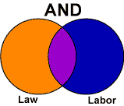
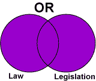
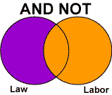

USING BOOLEAN LOGIC IN ONLINE RESEARCH
| Boolean logic is named after George Boole, the 19th-century British mathematician, who developed logical ways to formulate queries using true-false connectors or "operators." Boolean logic is the basis for searching most computerized systems, including online catalogs, databases, and the World Wide Web. |
| Diagram of the AND Operator |
| The Boolean operator AND limits the search and retrieves only the records that contain both indexed terms. In the diagram to the right, the AND search would retrieve records represented by the intersection of the two circles—the purple area. Using AND narrows a search. The AND operator is generally used to combine different concepts. |  |
| Diagram of the OR Operator |
| The Boolean operator OR broadens the search and retrieves records that contain either of the indexed terms. In the diagram to the right, the OR search would retrieve records represented by the two intersecting purple circles. The OR operator is generally used to combine similar, equivalent, or synonymous concepts. |  |
| Diagram of the AND NOT Operator |
| The Boolean operator AND NOT limits the search and excludes records that do not meet the first term used in the search strategy. In the diagram to the right, the AND NOT search would retrieve records represented by the purple area of the circle on the left. The AND NOT operator is generally used after your have run a search, looked at the results, and decided that you do not want to see records containing some word or phrase. The AND NOT operator should be used with caution, because it may eliminate records that are of potential interest. |  |